JetRacerの組み立て(新型)
TT-02をベースにJetRacerを組み立てます。
拡張ボディシャーシの組み立て
プラスチックのパーツを組み立てます。
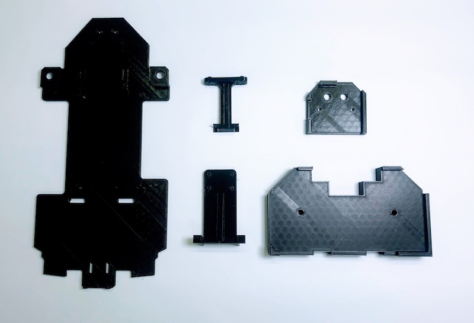
バッテリーマウントを、M2x6のタッピングネジ 2本を用いて取り付けます。


Wi-Fiルーターマウントを、M2x6のタッピングネジ 2本を用いて取り付けます。


ボディシャーシの取り付け
拡張ボディシャーシをRCカーに取り付けます。
矢印の箇所のネジ4本を取り外します。

モーターカバーのネジ4本を取り外し、モーターカバーを取り外します。


バッテリーを装着します。

最初に取り外したネジ4本を用いて再び固定します。
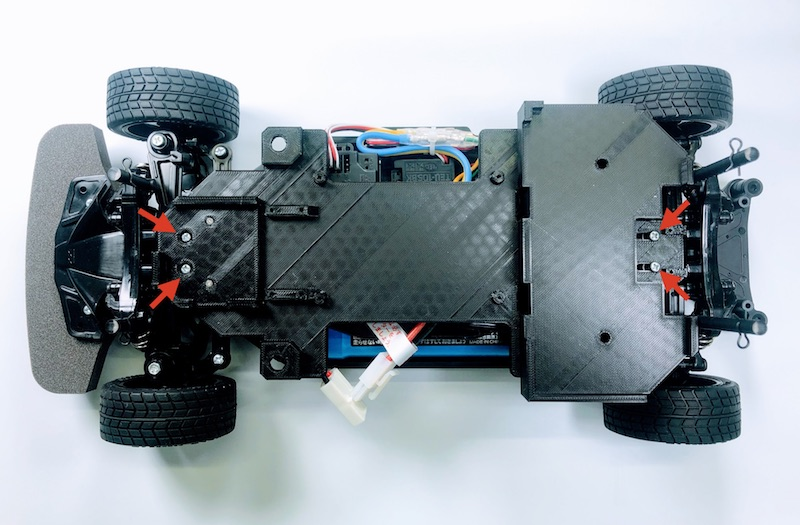
Jetson Nanoの取り付け
Jetson Nanoを、M2x6のタッピングネジ 4本を用いて取り付けます。


カメラの取り付け
カメラを、M2x6のタッピングネジ 4本を用いて取り付けます。


Jetson Nanoのカメラ端子コネクターを両サイドをつまみ持ち上げます。

Rev B01のカメラ端子が2つあるモデルでは、CAM0の方に差し込みます。

カメラのケーブルを指し、真ん中を指で押し、固定します。

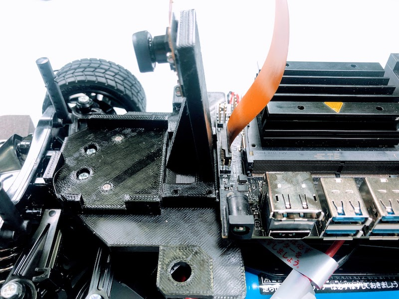
カメラマウントを、M2x6のタッピングネジ 4本を用いて取り付けます。


Jumperピンの設置
Rev A02(カメラ端子が1つのモデル)を使用する場合は、J48に緑のJumperピンを差し込みます。これにより、USB端子からの電源供給に変わり、DCジャックから電源供給が可能になります。 Rev B01(カメラ端子が2つのモデル)は、Jumperピンが標準でついているので、J48に差し込むことで、DCジャックからの電源供給が可能になっています。

LEDの取り付け
LEDの取り付けをおこないます。


LEDマウントを、M2x6のタッピングネジ 2本を用いて取り付けます。

Color LEDボードを、M2x6のタッピングネジ 2本を用いて取り付けます。
方向に注意してください。

CPU ファンの取り付け
4本のM2.5x14ネジとM2.5ナットでCPU ファン取り付けジグを用いて取り付けます。

M2.5ナットを載せて、CPU ヒートシンクの一層目の穴に入れ込みます。


M2.5x14ネジで固定します。


反対側も固定します。


ファンの電源コネクターをJetson Nanoに接続します。

Wi-Fiルーターの固定
固定用の両面テープを貼り付け、固定します。
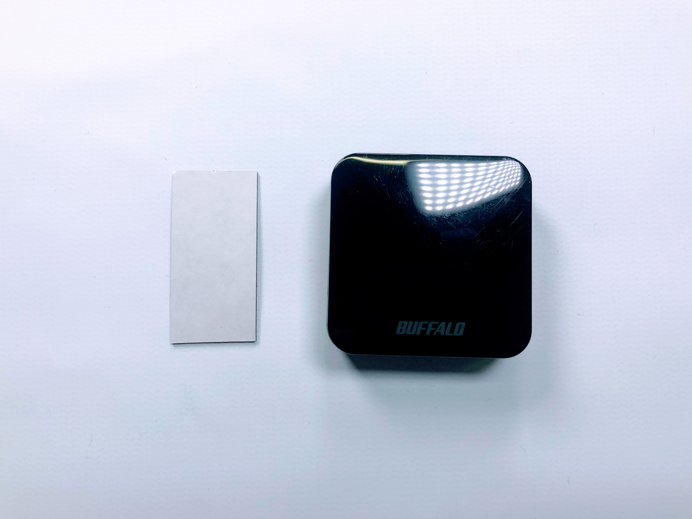


コントローラーボードの装着
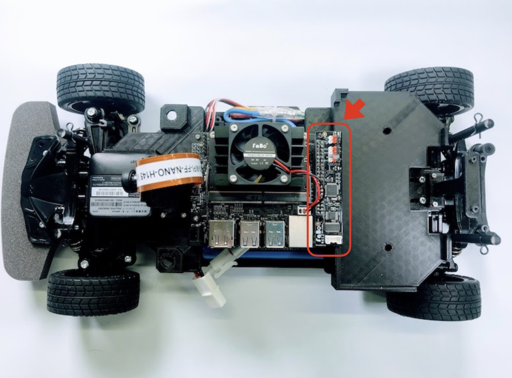
バッテリーの固定
固定用の両面テープを貼り付け、固定します。

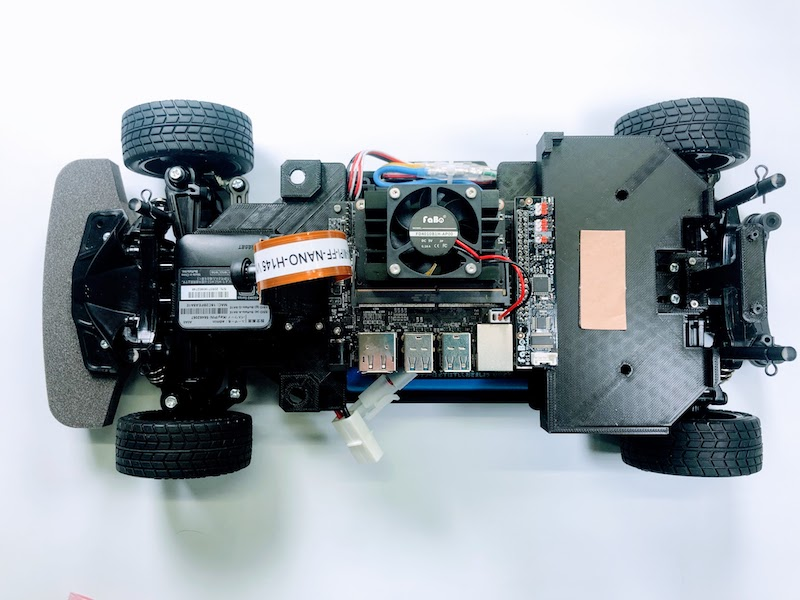

JetRacerの配線(新型)
LANケーブル
LANケーブルを接続します。

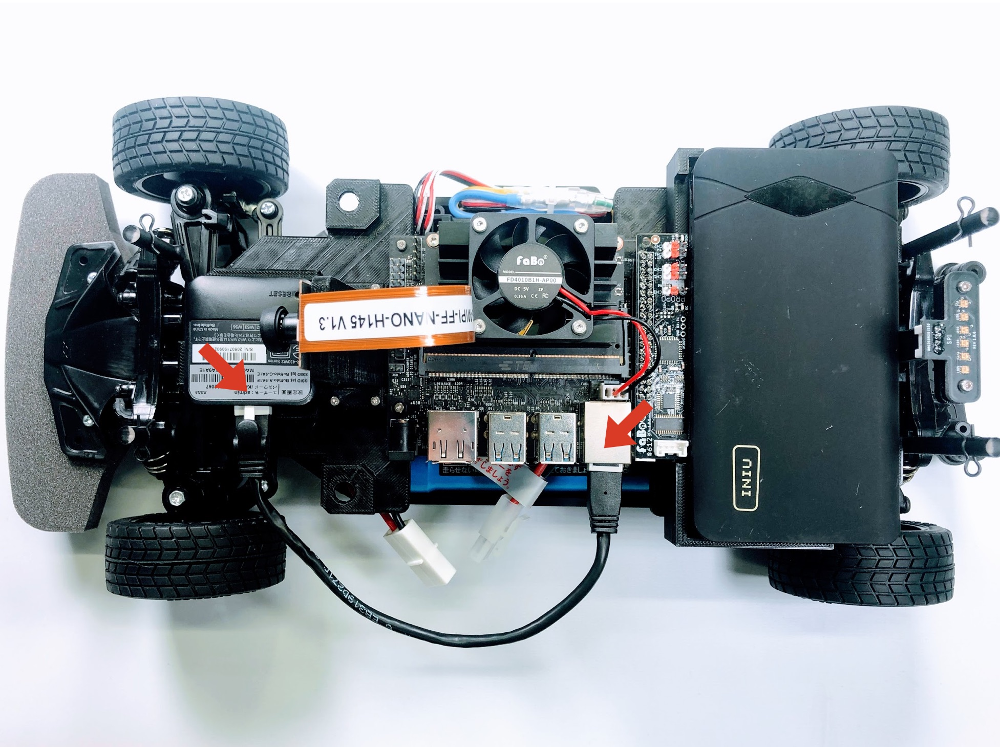
Wi-Fiルーター用のUSBケーブル
Wi-FiルーターにUSBケーブルを接続します。


モバイルバッテリーの電源が入る場合は、スイッチ部分をダブルクリックしてOffにしておきます。


LEDケーブル
LEDケーブルを接続します。
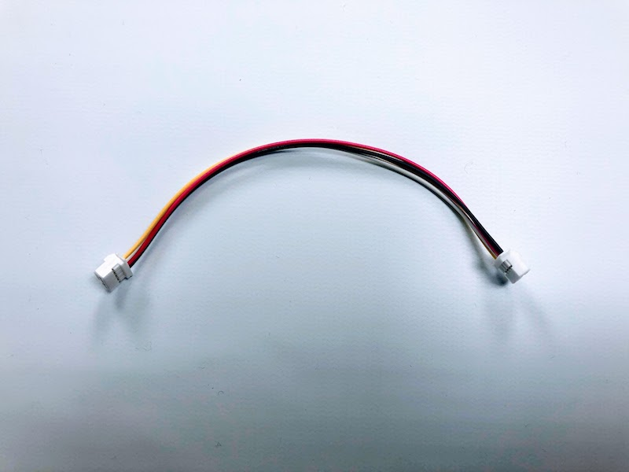

Jetson Nanoの電源
Jetson Nanoの電源ケーブルを接続します。


PWMの配線
PWMの配線をおこないます。
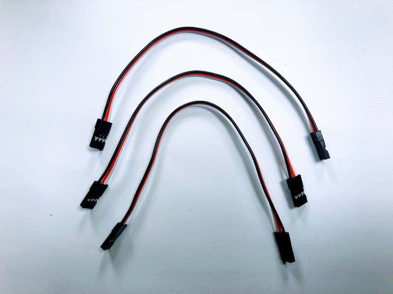
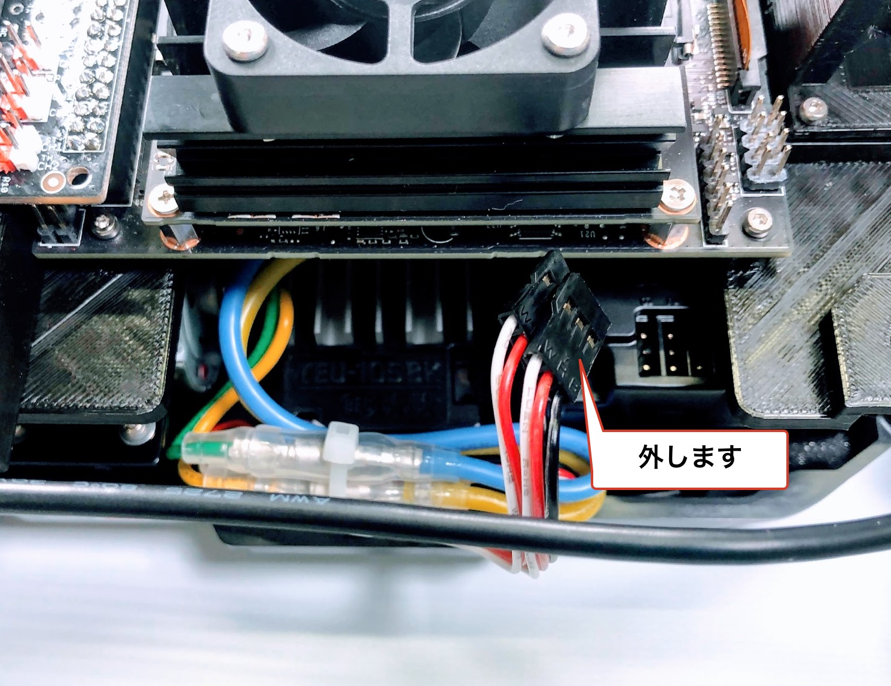
ch1の配線をおこないます。


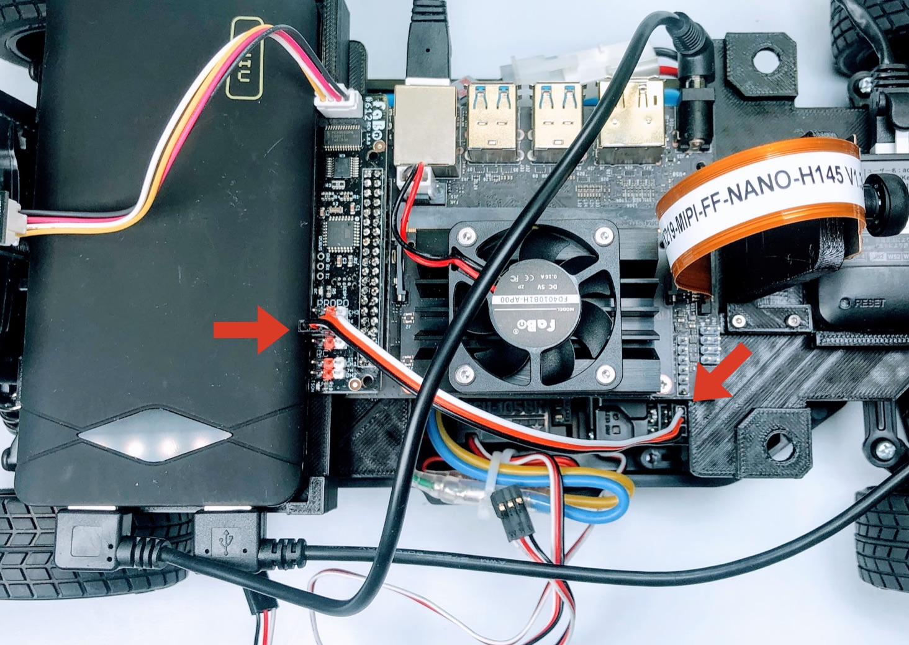
ch2の配線をおこないます。


chB(ch3)の配線をおこないます。

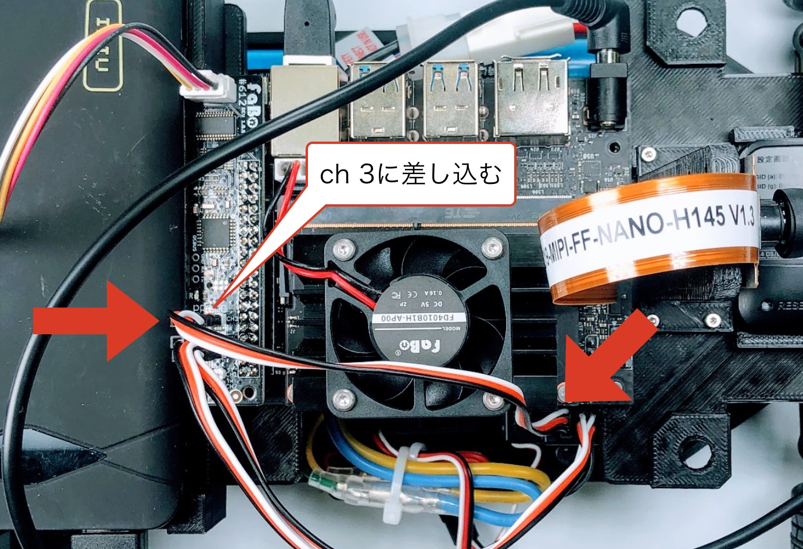
RCカーとの接続をおこないます。


RCカー本体のバッテリー接続
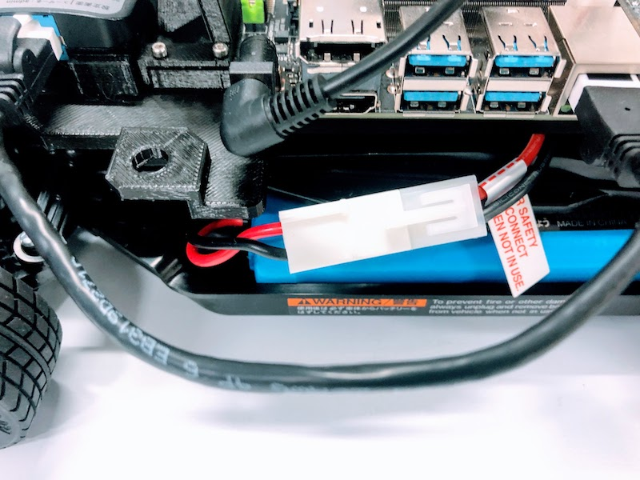
バッテリーの扱い
走行時以外は、バッテリーケーブルを必ず取り外してください。
プロポに乾電池を挿入

Jetson Nanoの電源をOn
Jetson Nanoの電源をOnにします。

LEDが緑色に点灯します。
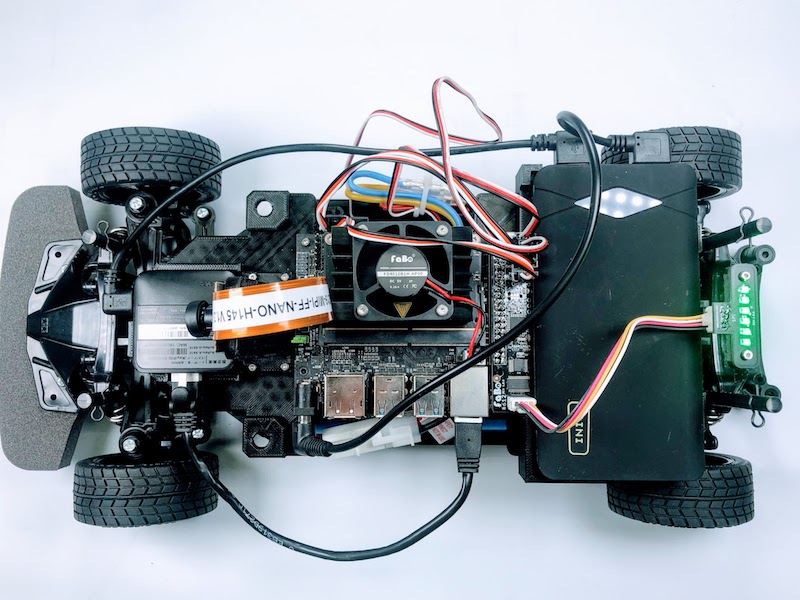
Jetson Nanoの電源がOnになったかは、Jetson Nanoの基板のLEDで確認します。タイミングや電力不足で、Jetson NanoのLEDが光らない場合もありますので、必ずLEDが点灯しているか確認します。

プロポの電源をOn

RCカーの電源をOn
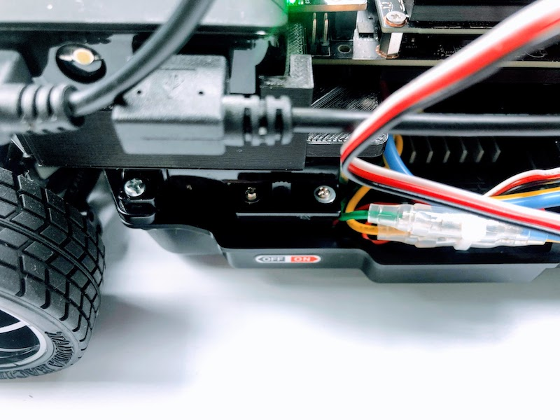
動作確認
最後に、RCカーモードとAIモードの切り替えの確認をおこないます。